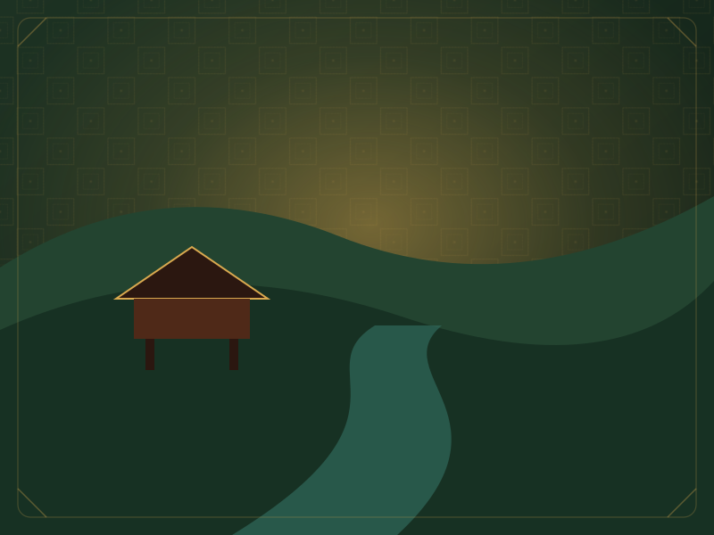
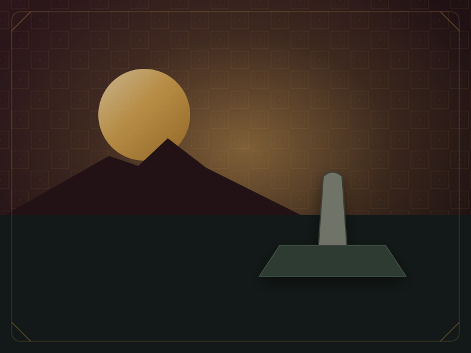

01
Jalur pesisir barat
Ombak, kopi, dan pasar ikan. Cocok untuk perjalanan lambat yang tidak mengejar banyak titik.
Peta jelajah · 15 kabupaten/kota
Lampung bukan satu titik di ujung Sumatra. Ia lanskap yang bergerak dari ombak Krui ke danau vulkanik, dari kebun kopi dataran tinggi ke muara yang sibuk. Peta ini memakai batas kabupaten/kota resmi—tetapi adat tidak selalu mengikuti garis administrasi.
01 — Wilayah
Gunakan kursor atau papan ketik untuk memilih wilayah. Filter rumpun adat membantu melihat pola, tetapi tiap wilayah bisa memiliki lebih dari satu komunitas.
15 kabupaten/kota
Klik salah satu wilayah pada peta atau daftar untuk membaca ringkasan, cerita budaya, dan kuliner yang terkait.
Rumpun adat di sini adalah penyederhanaan editorial. Banyak wilayah merupakan ruang bertemu beberapa komunitas sekaligus.
02 — Rute
Rute ini adalah undangan, bukan jadwal perjalanan resmi. Periksa akses jalan, musim, dan agenda setempat sebelum berangkat.
Ombak, kopi, dan pasar ikan. Cocok untuk perjalanan lambat yang tidak mengejar banyak titik.

Dari pusat tenun ke rumah adat, dengan catatan bahwa kunjungan harus melalui izin dan tata krama setempat.

Menelusuri jejak yang lebih tua dari kota: situs megalitik, museum, dan pesisir timur.
Peta hanyalah awal
Setelah menemukan wilayah, buka entri budaya atau hidangan yang tumbuh di sana. Kamu juga bisa mulai dari kamus untuk mengenali istilah yang muncul di peta.